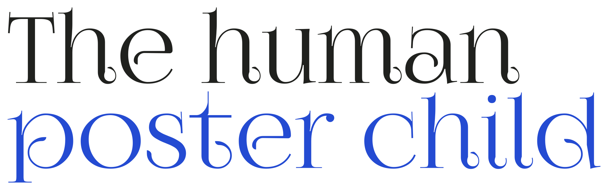

find a human

Welcome to The Human Poster Child state of mind!
Here, we want to make it easier to connect human designers with businesses, artists, and organizations that need visual imagery to market their product or event. We acknowledge it can be challenging to get a designer. There’s the search, budgeting, and aligning timelines-all attempted to be done while juggling the complexity of running a business with limited time and resources. There’s never going to be a guaranteed solution, and sometimes an AI generated image will be chosen by someone who doesn’t even prefer AI but still prefers it over their own creations for any reason. What I believe we do have control over is lowering the barriers to getting access to a human designer, and that’s why I started this site. It’s not a debate space. Just a simple, practical tool for fostering connections and feeding artists directly into the market where they’re needed; hopefully, the connections made within this grassroots marketplace will lead to real-life partnerships.
For background:
One of the side-effects of the AI age has been the proliferation of generated posters, designs, and advertising materials. Very many artists are disappointed because AI is impacting their livelihoods while AI companies are simultaneously training their models off these very artists without asking.
When it comes to using AI posters, there are two main issues at play, I think. One is the ease of AI use: type in a prompt, get an image. Second is that we are normalizing the distinctly AI “look” of generated content. We have found ourselves in a climate where it is normal that multiple businesses have their image represented by content aesthetically influenced by a tool lacking intent and provenance. Again, not everyone wants this. It’s simply the consequence of rapid production AI tools.
Lots of people do mind the “AI look”, even when they feel forced to choose it. But is this the only way to easily get designs? This site plans to compete with the ease of AI prototyping tools while protecting creative autonomy. I don’t think people necessarily have bad intentions when they resort to AI-generated posters and graphics. However, implicit in the industry pattern is that the role of designers and artists is dispensable. Small businesses tight on time and money may not support AI imagery in theory, but it is undeniable that a corporation with meaningful resources that chooses to go with AI sends a clear message: artists are the corner they’re willing to cut.
I will not pretend to be the voice of the creative communities at large; no one can be, so I’m open to editing this mission statement-just send me an email. I did my best to speak about the issue being mindful of various perspectives. I read this statement and pretended to put myself in the shoes of small businesses I know that have used AI, and artists I know with opinions around how AI has impacted them economically. My own perspectives are colored by society’s historical valuing of the arts, and corporate trends. I may also add a guest book page so that individual artists (and clients!) can share. My only ask is that the feedback be kept constructive and respectful. Shaming is not the goal here.
In closing, I am always inspired by the words of the Supreme Court Justice Ruth Bader Ginsberg:
“Fight for the things that you care about, but do it in a way that will lead others to join you.”
Respectfully,
The people behind the paper
Our artists
Preview roster. Names, email addresses, and artwork are illustrative placeholders.